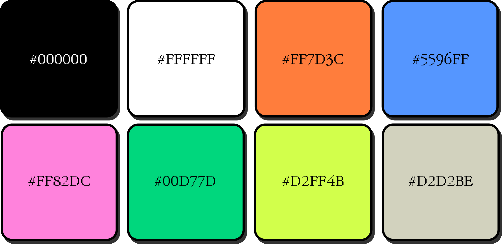
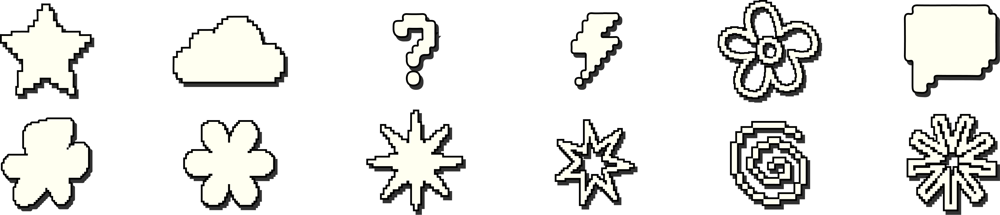
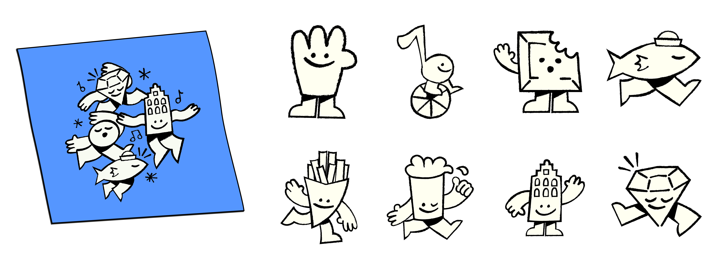
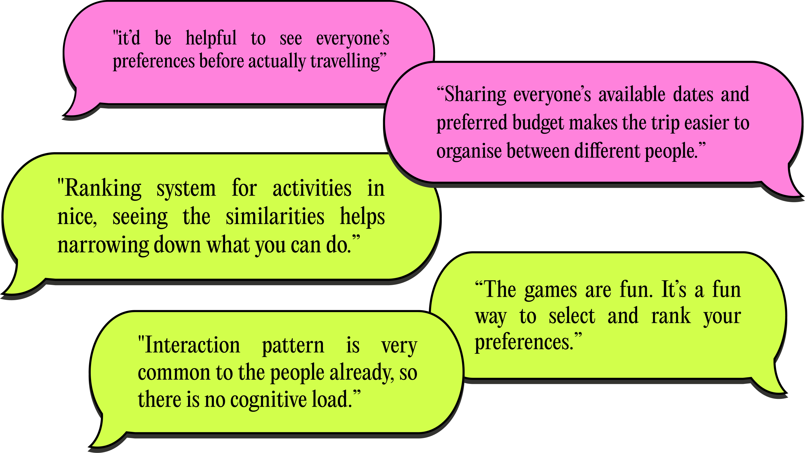
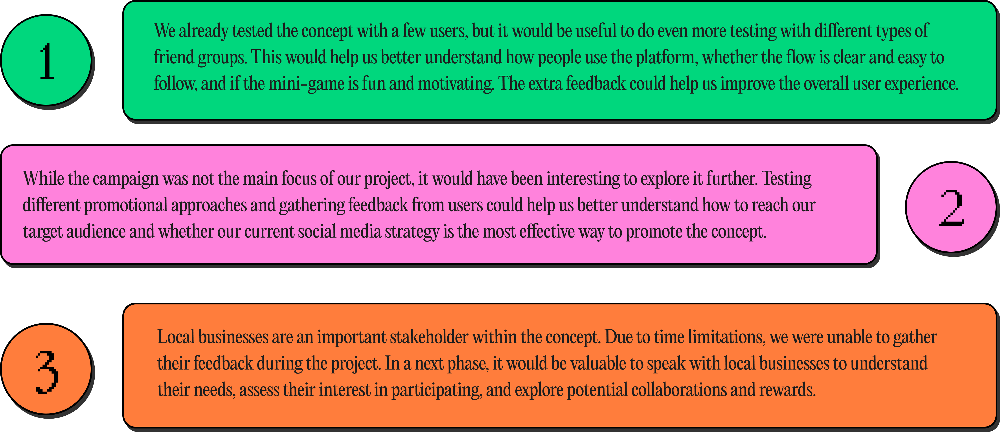
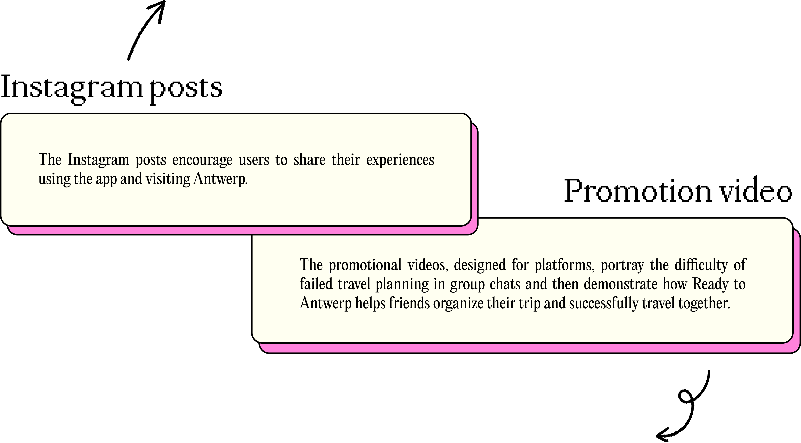

CREATE
Visual style
Our visual style draws inspiration from the city of Antwerp's branding, particularly in its color palette and the use of pixel art. This is complemented by a pixelated typeface. We have also integrated doodle-style graphics, as they align closely with the visual language of emotional apps.
Color palette

Typography
Pixelated shapes

Illustrations


Prototype test
We conducted usability testing with three teams from Devine School (Teams 3, 10, 13) using our prototype. Participants provided valuable feedback on the user experience, interface clarity, game concept, and overall usability. Based on their suggestions, we identified several areas for improvement that will be addressed in the next design iteration.

Feedback & design improvements
Based on the feedback, we removed the participant count numbers and redesigned the buttons into square shapes to improve their visual feedback so users can clearly tell when an activity has been selected.


We redesigned the game rules to make the game's concept and purpose easier to understand at a glance. We presented the rules in a drag sheet, enabling users to access the information quickly.
Originally, the flow was Activity Selection → Play Game → Vibe Selection. Based on feedback that the game disrupted the overall experience when placed in the middle, we revised the sequence to create a more seamless flow.


Tangibles

Next steps

Social media campaign
Branding concept is "Ready to", which connects directly to the name of our web app. The campaign consists of Instagram posts and short-form promotional videos. Through this branding and social media strategy, we aim to increase awareness of the web app and encourage more people to discover Antwerp.
